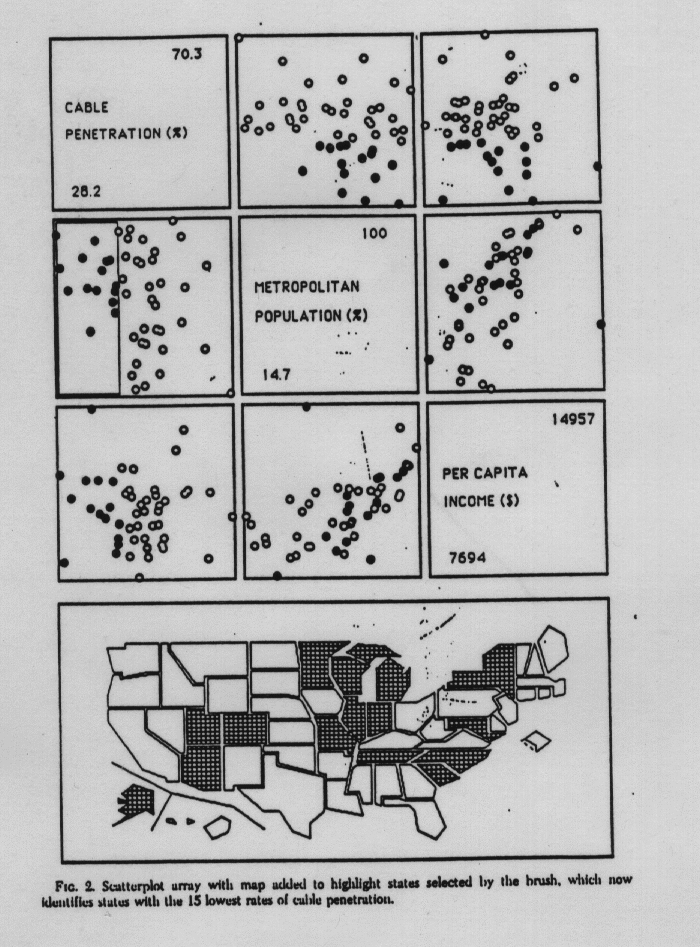

- Unit A-8 -- Correlation Describing Bivariate Data, Exercises 1.1 - 1.7,
2.17 - 2.19, 2.28 - 2.30
(1 Point each)
Let the Payroll be the explanatory variable and the Wins be the response variable. Also determine the correlation coefficient for these 2 variables and provide an interpretation of your result (note that the correlation coefficient is accessible via the `Simple Linear Regression' feature within WebStat). In particular, based on the discussion in Unit A-8, comment whether the correlation coefficient is meaningful. (5 Points)

- Label the (individual) scatterplot that shows
the `Cable Penetration' on the vertical (y-)axis
and the `Per Capita Income' on the horizontal
(x-)axis with the letter `A'.
- What is the range R of the `Per Capita Income' (in $)?
- Which of these statements is correct/incorrect?
- The state with the highest `Per Capita Income' has a
`Metropolitan Population' of less than 50%.
- The state with the highest `Per Capita Income'
has the second highest `Cable Penetration'.
- The 6 New England states have `Cable Penetrations' that
range among the 15 lowest rates of cable penetration in the U.S.
- California is the state with the highest `Per Capita Income'.
- The state with the highest `Per Capita Income' has a
`Metropolitan Population' of less than 50%.